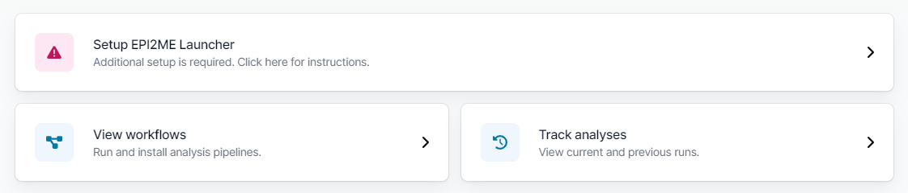
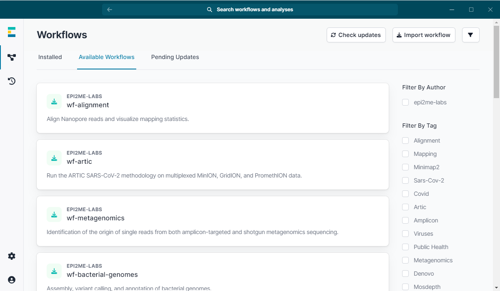
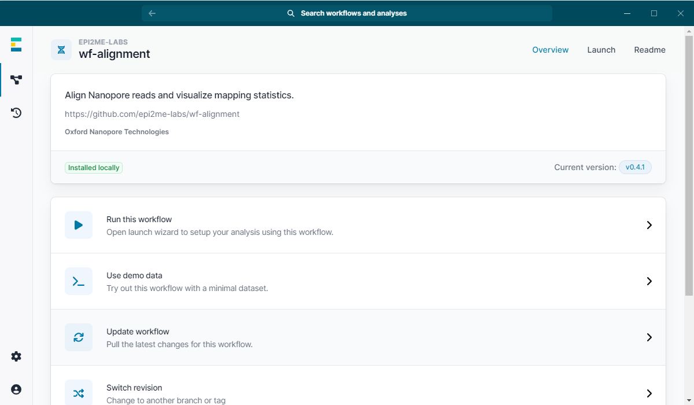
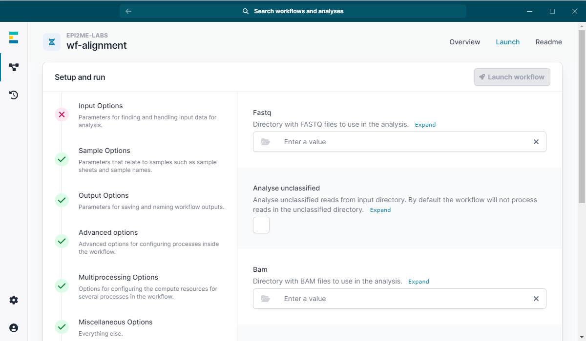
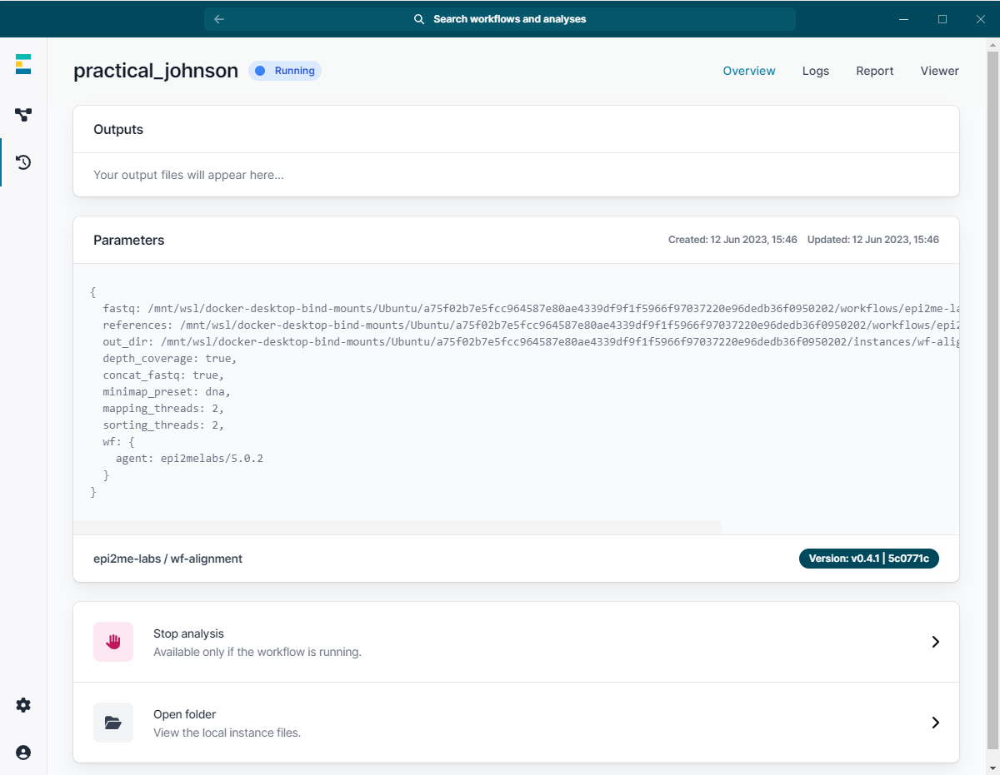
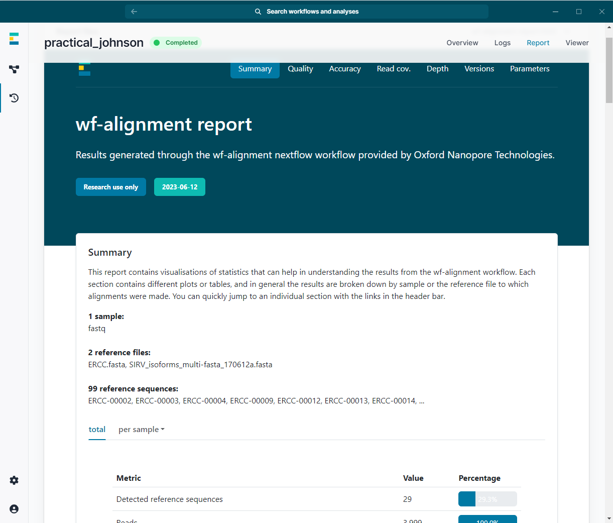

Getting Started
EPI2ME facilitates routine bioinformatics analyses by allowing users to run Nextflow workflows in a desktop application with an easy-to-use graphical interface. The app has been designed with ease of installation in mind in order to make sequencing data analysis as accessible as possible. Find installers for all major operating systems on our downloads page and click here for guidance on how to install.
EPI2ME
Every time EPI2ME is started, it checks if all dependencies required for running workflows are available. If one or more are missing, it will show a panel letting you know that some additional setup is required. Click on the panel and the app will guide you through installing whatever dependency is still lacking. You can also refer to the installation page for extra information.

Installing workflows
From the landing page, navigate to the workflows available for download by clicking on "View workflows" and then "Available Workflows". You can tick one or more tags (or authors) to narrow down the selection based on your interests. Once you found a workflow you want to try, click on it and confirm by pressing "Install". The workflow will then be downloaded and saved on your machine for later use.

Importing workflows
You can also import your own (or community-developed) workflows as long as they adhere to some design principles. Have a look at this post to see if the workflow in question needs tweaking before it can be imported. To import a workflow, again navigate to the "Workflows" view and click on "Import workflow" to enter the workflow's GitHub URL.
Running a workflow
Once you have installed one or more workflows, head to the "Installed" tab and click on a workflow you would like to run. From the next view you can launch the workflow (with your own data or a demo dataset). You can also update the workflow, switch to a different version, or open the folder where the workflow source files are stored.

In order to run the workflow, click on "Run this workflow" to open the launch wizard. Fill out the form (required parameter groups are marked with a red "X" which will turn to a green tick when filled out correctly) and press the "Launch workflow" button.

As soon as the run has started, the app will take you to a different view from where you can interrupt the workflow or view the logs.

Once the workflow finishes, you can have a look at the report.
